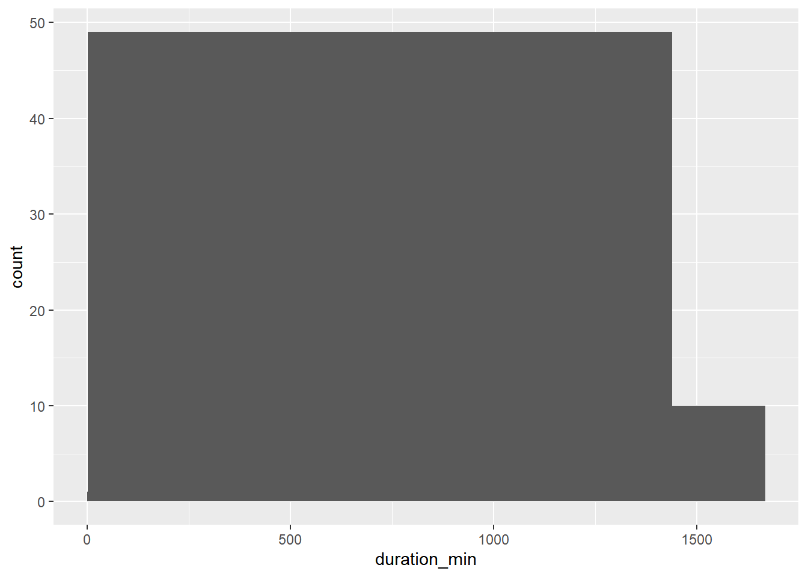
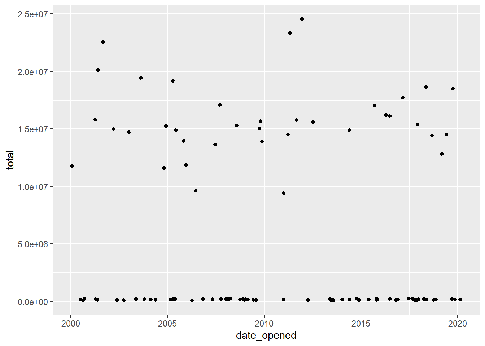
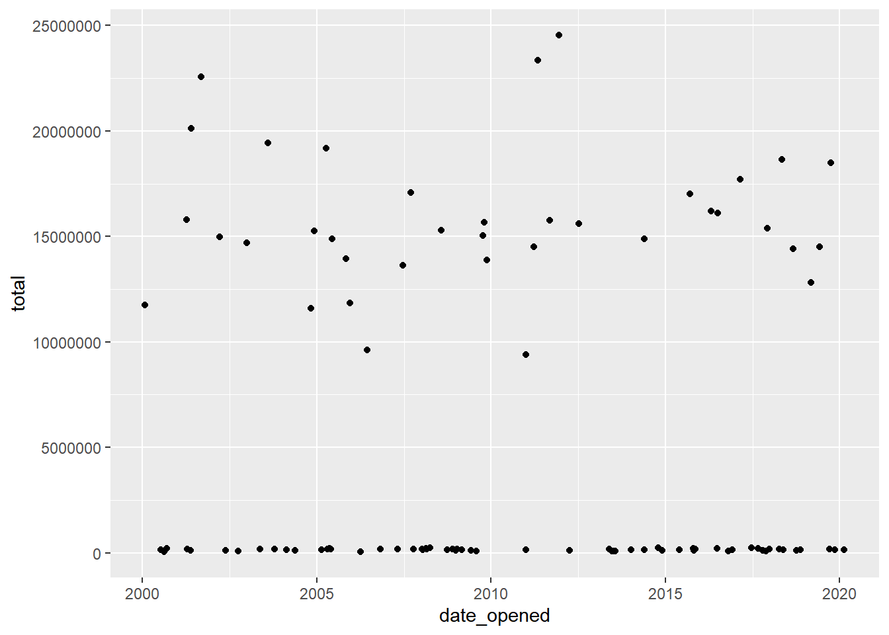
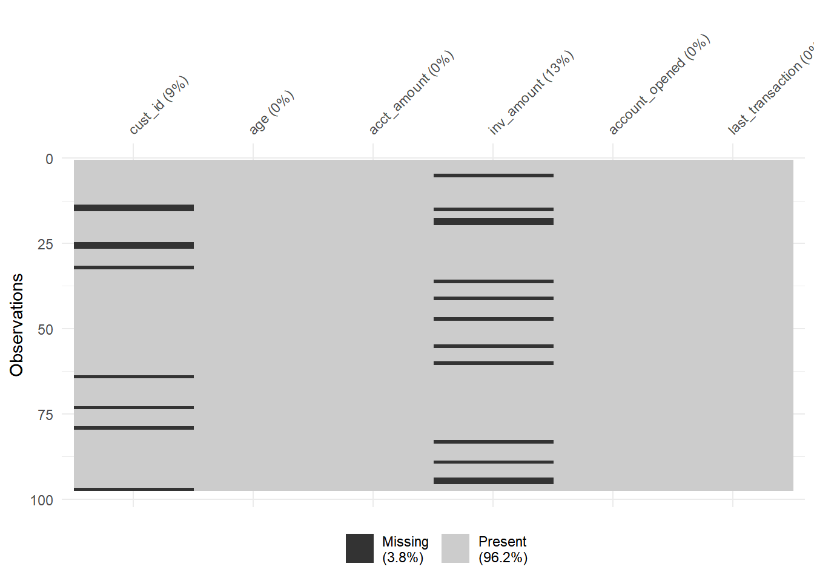
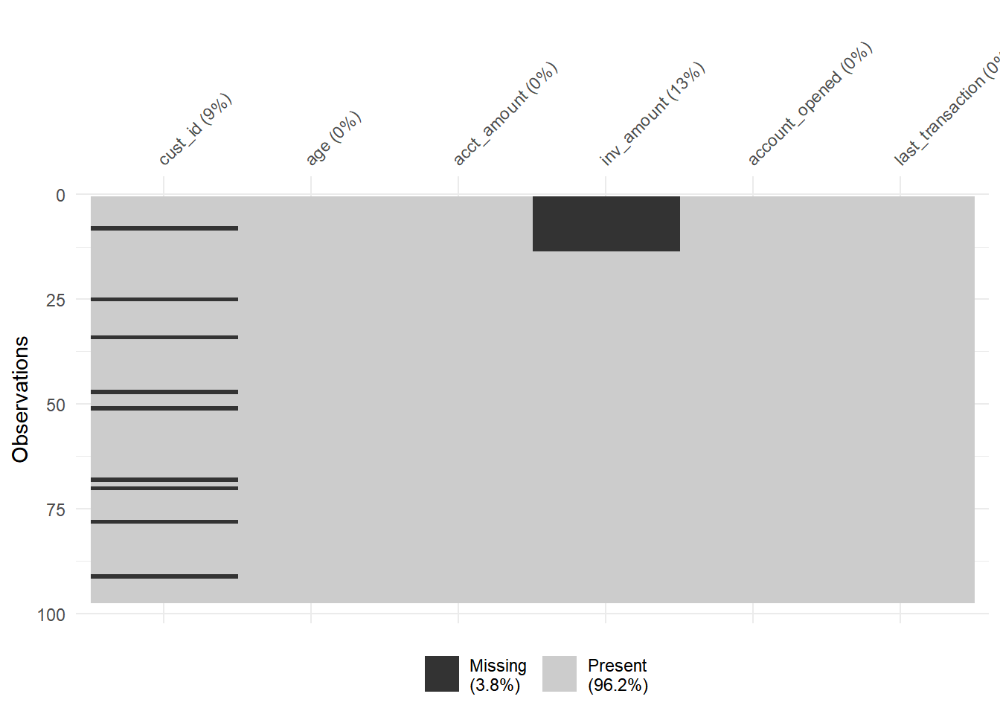
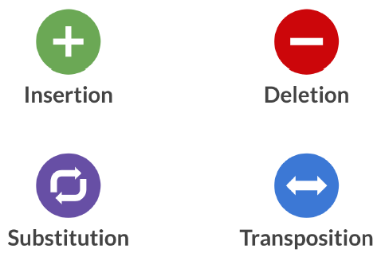
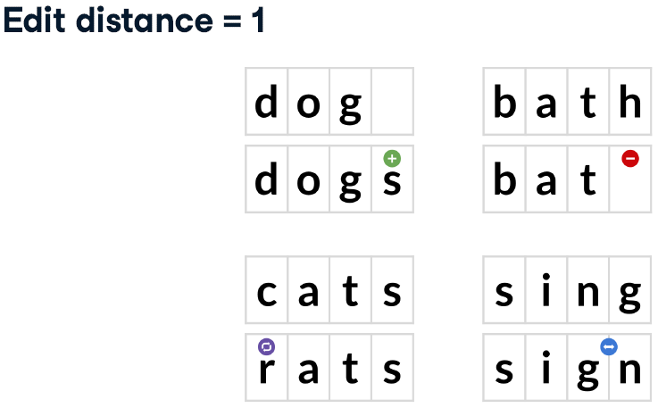
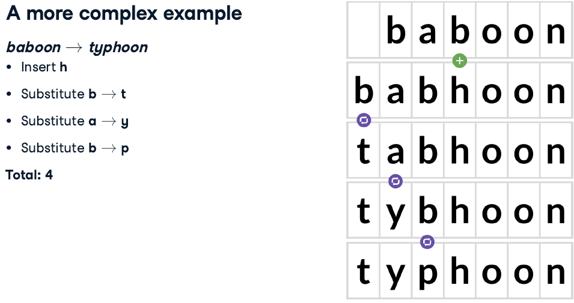

Chapter 10 Cleaning Data in R
10.1 Common Data Problems
10.1.1 Data type constraints
Glimpsing at data types
Checking data types:
is.*(), returnTRUE/FALSEclass(), return data type
Converting data types
as.*()notice for factor to numeric:
as.numeric(as.character())
10.1.1.1 Converting data types
Throughout this chapter, you’ll be working with San Francisco bike share ride data called bike_share_rides. It contains information on start and end stations of each trip, the trip duration, and some user information.
library(tidyverse)
bike_share_rides <- read_rds("data/bike_share_rides_ch1_1.rds")# Glimpse at bike_share_rides
glimpse(bike_share_rides)## Rows: 35,229
## Columns: 10
## $ ride_id <int> 52797, 54540, 87695, 45619, 70832, 96135, 29928, 83331…
## $ date <chr> "2017-04-15", "2017-04-19", "2017-04-14", "2017-04-03"…
## $ duration <chr> "1316.15 minutes", "8.13 minutes", "24.85 minutes", "6…
## $ station_A_id <dbl> 67, 21, 16, 58, 16, 6, 5, 16, 5, 81, 30, 16, 16, 67, 2…
## $ station_A_name <chr> "San Francisco Caltrain Station 2 (Townsend St at 4th…
## $ station_B_id <dbl> 89, 64, 355, 368, 81, 66, 350, 91, 62, 81, 109, 10, 80…
## $ station_B_name <chr> "Division St at Potrero Ave", "5th St at Brannan St", …
## $ bike_id <dbl> 1974, 860, 2263, 1417, 507, 75, 388, 239, 1449, 3289, …
## $ user_gender <chr> "Male", "Male", "Male", "Male", "Male", "Male", "Male"…
## $ user_birth_year <dbl> 1972, 1986, 1993, 1981, 1981, 1988, 1993, 1996, 1993, …# Summary of user_birth_year
summary(bike_share_rides$user_birth_year)## Min. 1st Qu. Median Mean 3rd Qu. Max.
## 1900 1979 1986 1984 1991 2001# Convert user_birth_year to factor: user_birth_year_fct
bike_share_rides <- bike_share_rides %>%
mutate(user_birth_year_fct = as.factor(user_birth_year))
# check user_birth_year_fct is a factor
is.factor(bike_share_rides$user_birth_year_fct)## [1] TRUE# Summary of user_birth_year_fct
summary(bike_share_rides$user_birth_year_fct)## 1900 1902 1923 1931 1938 1939 1941 1942 1943 1945 1946 1947 1948 1949 1950 1951
## 1 7 2 23 2 1 3 10 4 16 5 24 9 30 37 25
## 1952 1953 1954 1955 1956 1957 1958 1959 1960 1961 1962 1963 1964 1965 1966 1967
## 70 49 65 66 112 62 156 99 196 161 256 237 245 349 225 363
## 1968 1969 1970 1971 1972 1973 1974 1975 1976 1977 1978 1979 1980 1981 1982 1983
## 365 331 370 548 529 527 563 601 481 541 775 876 825 1016 1056 1262
## 1984 1985 1986 1987 1988 1989 1990 1991 1992 1993 1994 1995 1996 1997 1998 1999
## 1157 1318 1606 1672 2135 1872 2062 1582 1703 1498 1476 1185 813 358 365 348
## 2000 2001
## 473 3010.1.1.2 Trimming strings
Another common dirty data problem is having extra bits like percent signs or periods in numbers, causing them to be read in as characters. In order to be able to crunch these numbers, the extra bits need to be removed and the numbers need to be converted from character to numeric.
bike_share_rides <- bike_share_rides %>%
# Remove 'minutes' from duration: duration_trimmed
mutate(duration_trimmed = str_remove(duration, "minutes"),
# Convert duration_trimmed to numeric: duration_mins
duration_mins = as.numeric(duration_trimmed))
# Glimpse at bike_share_rides
glimpse(bike_share_rides)## Rows: 35,229
## Columns: 13
## $ ride_id <int> 52797, 54540, 87695, 45619, 70832, 96135, 29928, 8…
## $ date <chr> "2017-04-15", "2017-04-19", "2017-04-14", "2017-04…
## $ duration <chr> "1316.15 minutes", "8.13 minutes", "24.85 minutes"…
## $ station_A_id <dbl> 67, 21, 16, 58, 16, 6, 5, 16, 5, 81, 30, 16, 16, 6…
## $ station_A_name <chr> "San Francisco Caltrain Station 2 (Townsend St at…
## $ station_B_id <dbl> 89, 64, 355, 368, 81, 66, 350, 91, 62, 81, 109, 10…
## $ station_B_name <chr> "Division St at Potrero Ave", "5th St at Brannan S…
## $ bike_id <dbl> 1974, 860, 2263, 1417, 507, 75, 388, 239, 1449, 32…
## $ user_gender <chr> "Male", "Male", "Male", "Male", "Male", "Male", "M…
## $ user_birth_year <dbl> 1972, 1986, 1993, 1981, 1981, 1988, 1993, 1996, 19…
## $ user_birth_year_fct <fct> 1972, 1986, 1993, 1981, 1981, 1988, 1993, 1996, 19…
## $ duration_trimmed <chr> "1316.15 ", "8.13 ", "24.85 ", "6.35 ", "9.8 ", "1…
## $ duration_mins <dbl> 1316.15, 8.13, 24.85, 6.35, 9.80, 17.47, 16.52, 14…# Assert duration_mins is numeric
is.numeric(bike_share_rides$duration_mins)## [1] TRUE# Calculate mean duration
mean(bike_share_rides$duration_mins)## [1] 13.0621410.1.2 Range constraints
Finding out of range values (不可能出現的值)
For example:
- SAT score: 400-1600 -> 352 or 1700 are out of range
- Adult heart rate: 60-100 beats per minute
Handling out of range values
Remove rows
Treat as missing (
NA)Replace with range limit
Replace with other value based on domain knowledge and/or knowledge of dataset
10.1.2.1 Numerical data constraints
Bikes are not allowed to be kept out for more than 24 hours, or 1440 minutes at a time, but issues with some of the bikes caused inaccurate recording of the time they were returned. In this exercise, you’ll replace erroneous data with the range limit (1440 minutes).
# Load dataset
bike_share_rides <- read_csv("data/bike_share_rides_duration.csv")
# Create breaks
breaks <- c(min(bike_share_rides$duration_min), 0, 1440,
max(bike_share_rides$duration_min))
# Create a histogram of duration_min
ggplot(bike_share_rides, aes(duration_min)) +
geom_histogram(breaks = breaks)
# duration_min_const: replace vals of duration_min > 1440 with 1440
bike_share_rides <- bike_share_rides %>%
mutate(duration_min_const = replace(duration_min, duration_min > 1440, 1440))
# Make sure all values of duration_min_const are between 0 and 1440
range(bike_share_rides$duration_min_const)## [1] 2.27 1440.0010.1.2.2 Date constraints
You’ll need to remove any rides from the dataset that have a date in the future.
Before you can do this, the date column needs to be converted from a character to a Date. R makes it easy to check if one Date object is before (<) or after (>) another.
# Load dataset again and create future data
bike_share_rides <- read_rds("data/bike_share_rides_ch1_1.rds")
bike_share_rides$date <- str_replace_all(bike_share_rides$date, "2017-04-25", "2043-02-17")
# Convert date to Date type
bike_share_rides <- bike_share_rides %>%
mutate(date = as.Date(date))
# Make sure all dates are in the past
bike_share_rides %>% filter(date > today())## # A tibble: 1,204 × 10
## ride_id date duration station_A_id station_A_name station_B_id
## <int> <date> <chr> <dbl> <chr> <dbl>
## 1 69172 2043-02-17 12.68 minutes 16 Steuart St at Mar… 80
## 2 63197 2043-02-17 4.07 minutes 67 San Francisco Cal… 321
## 3 61811 2043-02-17 12.25 minutes 21 Montgomery St BAR… 74
## 4 48844 2043-02-17 11 minutes 30 San Francisco Cal… 126
## 5 79817 2043-02-17 12.02 minutes 15 San Francisco Fer… 3
## 6 72592 2043-02-17 18 minutes 30 San Francisco Cal… 10
## 7 66670 2043-02-17 7.23 minutes 16 Steuart St at Mar… 50
## 8 66471 2043-02-17 13 minutes 5 Powell St BART St… 92
## 9 79675 2043-02-17 7.95 minutes 3 Powell St BART St… 26
## 10 86488 2043-02-17 3.5 minutes 67 San Francisco Cal… 90
## # ℹ 1,194 more rows
## # ℹ 4 more variables: station_B_name <chr>, bike_id <dbl>, user_gender <chr>,
## # user_birth_year <dbl># Filter for rides that occurred before or on today's date
bike_share_rides_past <- bike_share_rides %>%
filter(date <= today())
# Make sure all dates from bike_share_rides_past are in the past
max(bike_share_rides_past$date)## [1] "2017-04-30"10.1.3 Uniqueness constraints
10.1.3.1 Full duplicates
A full duplicate occurs when there are multiple rows that have the same value in every column.
Removing duplicates like this is important, since having the same value repeated multiple times can alter summary statistics like the mean and median.
# count duplicate
sum(duplicated(dataframe))
# Remove full duplicate
dataframe %>%
distinct(.keep_all = TRUE)# Load dataset
bike_share_rides <- read_csv("data/bike_share_rides_full_duplicated.csv")
# Count the number of full duplicates
sum(duplicated(bike_share_rides))## [1] 2# Remove duplicates
bike_share_rides_unique <- bike_share_rides %>%
distinct(.keep_all = TRUE)
# Count the full duplicates in bike_share_rides_unique
sum(duplicated(bike_share_rides_unique))## [1] 010.1.3.2 Partial duplicates
Partial duplicates are rows of data that have much of the same information and refer to the same data point, but there may be some columns that differ between them.
ride_id should be unique
# Load dataset
bike_share_rides <- read_csv("data/bike_share_rides_partial_duplicated.csv")
# Find duplicated ride_ids
bike_share_rides %>%
# Count the number of occurrences of each ride_id
count(ride_id) %>%
# Filter for rows with a count > 1
filter(n > 1)## # A tibble: 2 × 2
## ride_id n
## <dbl> <int>
## 1 41441 2
## 2 87056 2Removing partial duplicates
# Remove partial duplicate
dataframe %>%
distinct(column, .keep_all = TRUE)# Remove full and partial duplicates
bike_share_rides_unique <- bike_share_rides %>%
# Only based on ride_id instead of all cols
distinct(ride_id, .keep_all = T)
# Find duplicated ride_ids in bike_share_rides_unique
bike_share_rides_unique %>%
# Count the number of occurrences of each ride_id
count(ride_id) %>%
# Filter for rows with a count > 1
filter(n > 1)## # A tibble: 0 × 2
## # ℹ 2 variables: ride_id <dbl>, n <int>Aggregating partial duplicates
Another way of handling partial duplicates is to compute a summary statistic of the values that differ between partial duplicates, such as mean, median, maximum, or minimum. This can come in handy when you’re not sure how your data was collected and want an average, or if based on domain knowledge, you’d rather have too high of an estimate than too low of an estimate (or vice versa).
bike_share_rides %>%
# Group by ride_id and date
group_by(ride_id, date) %>%
# Add duration_min_avg column
mutate(duration_min_avg = mean(duration_min)) %>%
# Remove duplicates based on ride_id and date, keep all cols
distinct(ride_id, date, .keep_all = T) %>%
# Remove duration_min column
select(-duration_min)## # A tibble: 35,229 × 6
## # Groups: ride_id, date [35,229]
## ride_id date station_A_id station_A_name station_B_id duration_min_avg
## <dbl> <chr> <dbl> <chr> <dbl> <dbl>
## 1 52797 4/15/2017 67 "San Francisco … 89 1316
## 2 54540 4/19/2017 21 "Montgomery St … 64 8.13
## 3 87695 4/14/2017 16 "Steuart St at … 355 24.8
## 4 45619 4/3/2017 58 "Market St at 1… 368 6.35
## 5 70832 4/10/2017 16 "Steuart St at … 81 9.8
## 6 96135 4/18/2017 6 "The Embarcader… 66 17.5
## 7 29928 4/22/2017 5 "Powell St BART… 350 16.5
## 8 83331 4/11/2017 16 "Steuart St at … 91 14.7
## 9 72424 4/5/2017 5 "Powell St BART… 62 4.12
## 10 25910 4/20/2017 81 "Berry St at 4t… 81 25.8
## # ℹ 35,219 more rows10.2 Categorical and Text Data
10.2.1 Checking membership
Filtering joins: Keeps or removes observations from the first table without adding columns.
- Anti-joins: help you identify the rows that are causing issues
- semi-joins: remove the issue-causing rows.

sfo_survey containing survey responses from passengers taking flights from San Francisco International Airport (SFO).
dest_sizes is available that contains all the possible destination sizes.
Your mission is to find rows with invalid dest_sizes and remove them from the data frame.
# Load dataset
sfo_survey <- read_rds("data/sfo_survey_ch2_1.rds")
str(sfo_survey)## 'data.frame': 2809 obs. of 12 variables:
## $ id : int 1842 1844 1840 1837 1833 3010 1838 1845 2097 1846 ...
## $ day : chr "Monday" "Monday" "Monday" "Monday" ...
## $ airline : chr "TURKISH AIRLINES" "TURKISH AIRLINES" "TURKISH AIRLINES" "TURKISH AIRLINES" ...
## $ destination : chr "ISTANBUL" "ISTANBUL" "ISTANBUL" "ISTANBUL" ...
## $ dest_region : chr "Middle East" "Middle East" "Middle East" "Middle East" ...
## $ dest_size : chr "Hub" "Hub" "Hub" "Hub" ...
## $ boarding_area: chr "Gates 91-102" "Gates 91-102" "Gates 91-102" "Gates 91-102" ...
## $ dept_time : chr "2018-12-31" "2018-12-31" "2018-12-31" "2018-12-31" ...
## $ wait_min : num 255 315 165 225 175 ...
## $ cleanliness : chr "Average" "Somewhat clean" "Average" "Somewhat clean" ...
## $ safety : chr "Neutral" "Somewhat safe" "Somewhat safe" "Somewhat safe" ...
## $ satisfaction : chr "Somewhat satsified" "Somewhat satsified" "Somewhat satsified" "Somewhat satsified" ...# Create a dest_sizes dataframe for validation
dest_size <- c("Small", "Medium", "Large", "Hub")
passengers_per_day <- c("0-20K", "20K-70K", "70K-100K", "100K+")
dest_sizes <- data.frame(dest_size, passengers_per_day)
str(dest_sizes)## 'data.frame': 4 obs. of 2 variables:
## $ dest_size : chr "Small" "Medium" "Large" "Hub"
## $ passengers_per_day: chr "0-20K" "20K-70K" "70K-100K" "100K+"# Count the number of occurrences of dest_size
sfo_survey %>%
count(dest_size)## dest_size n
## 1 Small 1
## 2 Hub 1
## 3 Hub 1756
## 4 Large 143
## 5 Large 1
## 6 Medium 682
## 7 Small 225# Find bad dest_size rows
sfo_survey %>%
# Join with dest_sizes data frame to get bad dest_size rows
anti_join(dest_sizes, by = "dest_size") %>%
# Select id, airline, destination, and dest_size cols
select(id, airline, destination, dest_size)## id airline destination dest_size
## 1 982 LUFTHANSA MUNICH Hub
## 2 2063 AMERICAN PHILADELPHIA Large
## 3 777 UNITED INTL SAN JOSE DEL CABO Small# Remove bad dest_size rows
sfo_survey %>%
# Join with dest_sizes
semi_join(dest_sizes, by = "dest_size") %>%
# Count the number of each dest_size
count(dest_size)## dest_size n
## 1 Hub 1756
## 2 Large 143
## 3 Medium 682
## 4 Small 22510.2.2 Categorical data problems
Inconsistency within a category
- Case inconsistency:
str_to_lower(),str_to_upper() - Whitespace inconsistency:
str_trim()
- Case inconsistency:
Too many categories
- Collapsing categories:
fct_collapse()
- Collapsing categories:
10.2.2.1 Identifying inconsistency
You’ll examine the dest_size column again as well as the cleanliness column and determine what kind of issues.
# Load uncleaned data
sfo_survey <- read_delim("data/sfo_survey_not_clean.txt", delim = ",",
col_select = 2:13)## New names:
## Rows: 2809 Columns: 12
## ── Column specification
## ────────────────────── Delimiter: "," chr
## (9): day, airline, destination, dest_region,
## dest_size, boarding_area, ... dbl (2): id,
## wait_min date (1): dept_time
## ℹ Use `spec()` to retrieve the full column
## specification for this data. ℹ Specify the
## column types or set `show_col_types = FALSE`
## to quiet this message.
## • `` -> `...1`# Count dest_size
sfo_survey %>%
count(dest_size)## # A tibble: 7 × 2
## dest_size n
## <chr> <int>
## 1 " Small " 1
## 2 " Hub" 1
## 3 "Hub" 1756
## 4 "Large" 143
## 5 "Large " 1
## 6 "Medium" 682
## 7 "Small" 225# Count cleanliness
sfo_survey %>%
count(cleanliness)## # A tibble: 9 × 2
## cleanliness n
## <chr> <int>
## 1 AVERAGE 1
## 2 Average 431
## 3 Clean 970
## 4 Dirty 2
## 5 Somewhat clean 1253
## 6 Somewhat dirty 30
## 7 average 1
## 8 somewhat clean 1
## 9 <NA> 12010.2.2.2 Correcting inconsistency
Now that you’ve identified that dest_size has whitespace inconsistencies and cleanliness has capitalization inconsistencies, you’ll fix the inconsistent values in sfo_survey.
# Add new columns to sfo_survey
sfo_survey <- sfo_survey %>%
# dest_size_trimmed: dest_size without whitespace
mutate(dest_size_trimmed = str_trim(dest_size),
# cleanliness_lower: cleanliness converted to lowercase
cleanliness_lower = str_to_lower(cleanliness))
# Count values of dest_size_trimmed
sfo_survey %>%
count(dest_size_trimmed)## # A tibble: 4 × 2
## dest_size_trimmed n
## <chr> <int>
## 1 Hub 1757
## 2 Large 144
## 3 Medium 682
## 4 Small 226# Count values of cleanliness_lower
sfo_survey %>%
count(cleanliness_lower)## # A tibble: 6 × 2
## cleanliness_lower n
## <chr> <int>
## 1 average 433
## 2 clean 970
## 3 dirty 2
## 4 somewhat clean 1254
## 5 somewhat dirty 30
## 6 <NA> 12010.2.2.3 Collapsing categories
Allowing the response for dest_region to be free text instead of a dropdown menu. This resulted in some inconsistencies in the dest_region variable
# Count categories of dest_region
sfo_survey %>%
count(dest_region)## # A tibble: 12 × 2
## dest_region n
## <chr> <int>
## 1 Asia 260
## 2 Australia/New Zealand 66
## 3 Canada/Mexico 220
## 4 Central/South America 29
## 5 EU 2
## 6 East US 498
## 7 Europ 1
## 8 Europe 396
## 9 Middle East 79
## 10 Midwest US 281
## 11 West US 975
## 12 eur 2# Categories to map to Europe
europe_categories <- c("EU", "eur", "Europ")
# Add a new col dest_region_collapsed
sfo_survey %>%
# Map all categories in europe_categories to Europe
mutate(dest_region_collapsed = fct_collapse(dest_region,
Europe = europe_categories)) %>%
# Count categories of dest_region_collapsed
count(dest_region_collapsed)## # A tibble: 9 × 2
## dest_region_collapsed n
## <fct> <int>
## 1 Asia 260
## 2 Australia/New Zealand 66
## 3 Canada/Mexico 220
## 4 Central/South America 29
## 5 East US 498
## 6 Europe 401
## 7 Middle East 79
## 8 Midwest US 281
## 9 West US 975You’ve reduced the number of categories from 12 to 9, and you can now be confident that 401 of the survey participants were heading to Europe.
10.2.3 Cleaning text data
Unstructured data problems
Formatting inconsistency
"6171679912"vs."(868) 949-4489""9239 5849 3712 0039"vs."4490459957881031"
Information inconsistency
+1 617-167-9912vs.617-167-9912"Veronica Hopkins"vs."Josiah"
Invalid data
Phone number
"0492"is too shortZip code
"19888"doesn’t exist
Useful stringr function
str_detect()str_replace_all()str_remove_all()str_length()
10.2.3.1 Detecting inconsistent text data
sfo_survey <- read_csv("data/sfo_survey_phone.csv")
str(sfo_survey)## spc_tbl_ [2,809 × 4] (S3: spec_tbl_df/tbl_df/tbl/data.frame)
## $ id : num [1:2809] 1842 1844 1840 1837 1833 ...
## $ airline : chr [1:2809] "TURKISH AIRLINES" "TURKISH AIRLINES" "TURKISH AIRLINES" "TURKISH AIRLINES" ...
## $ destination: chr [1:2809] "ISTANBUL" "ISTANBUL" "ISTANBUL" "ISTANBUL" ...
## $ phone : chr [1:2809] "858 990 5153" "731-813-2043" "563-732-6802" "145 725 4021" ...
## - attr(*, "spec")=
## .. cols(
## .. id = col_double(),
## .. airline = col_character(),
## .. destination = col_character(),
## .. phone = col_character()
## .. )
## - attr(*, "problems")=<externalptr>You found that some phone numbers are written with hyphens (-) and some are written with parentheses (()). In this exercise, you’ll figure out which phone numbers have these issues so that you know which ones need fixing.
# Filter for rows with "-" in the phone column
sfo_survey %>%
filter(str_detect(phone, "-"))## # A tibble: 1,421 × 4
## id airline destination phone
## <dbl> <chr> <chr> <chr>
## 1 1844 TURKISH AIRLINES ISTANBUL 731-813-2043
## 2 1840 TURKISH AIRLINES ISTANBUL 563-732-6802
## 3 3010 AMERICAN MIAMI (637) 782-6989
## 4 2097 UNITED INTL MEXICO CITY (359) 803-9809
## 5 1835 TURKISH AIRLINES ISTANBUL (416) 788-2844
## 6 1849 TURKISH AIRLINES ISTANBUL 311-305-4367
## 7 2289 QANTAS SYDNEY 817-400-0481
## 8 105 UNITED WASHINGTON DC-DULLES (729) 609-4819
## 9 1973 CATHAY PACIFIC HONG KONG (201) 737-4409
## 10 2385 UNITED INTL SYDNEY (137) 611-3694
## # ℹ 1,411 more rowsSearching for special characters requires using fixed() :
str_detect(column, fixed("$"))
# Filter for rows with "(" or ")" in the phone column
sfo_survey %>%
filter(str_detect(phone, fixed("(")) | str_detect(phone, fixed(")")))## # A tibble: 739 × 4
## id airline destination phone
## <dbl> <chr> <chr> <chr>
## 1 3010 AMERICAN MIAMI (637) 782-6989
## 2 2097 UNITED INTL MEXICO CITY (359) 803-9809
## 3 1835 TURKISH AIRLINES ISTANBUL (416) 788-2844
## 4 105 UNITED WASHINGTON DC-DULLES (729) 609-4819
## 5 1973 CATHAY PACIFIC HONG KONG (201) 737-4409
## 6 2385 UNITED INTL SYDNEY (137) 611-3694
## 7 517 UNITED FT. LAUDERDALE (812) 869-6263
## 8 2885 EVA AIR TAIPEI (194) 198-0504
## 9 2128 FRONTIER DENVER (299) 137-6993
## 10 2132 FRONTIER DENVER (739) 710-2966
## # ℹ 729 more rows10.2.3.2 Replacing and removing
The customer support team has requested that all phone numbers be in the format "123 456 7890".
# Remove parentheses from phone column
phone_no_parens <- sfo_survey$phone %>%
# Remove "("s
str_remove_all(fixed("(")) %>%
# Remove ")"s
str_remove_all(fixed(")"))
# Add phone_no_parens as column
sfo_survey <- sfo_survey %>%
mutate(phone_no_parens = phone_no_parens,
# Replace all hyphens in phone_no_parens with spaces
phone_clean = str_replace_all(phone_no_parens, "-", " "))
sfo_survey## # A tibble: 2,809 × 6
## id airline destination phone phone_no_parens phone_clean
## <dbl> <chr> <chr> <chr> <chr> <chr>
## 1 1842 TURKISH AIRLINES ISTANBUL 858 990 5153 858 990 5153 858 990 51…
## 2 1844 TURKISH AIRLINES ISTANBUL 731-813-2043 731-813-2043 731 813 20…
## 3 1840 TURKISH AIRLINES ISTANBUL 563-732-6802 563-732-6802 563 732 68…
## 4 1837 TURKISH AIRLINES ISTANBUL 145 725 4021 145 725 4021 145 725 40…
## 5 1833 TURKISH AIRLINES ISTANBUL 931 311 5801 931 311 5801 931 311 58…
## 6 3010 AMERICAN MIAMI (637) 782-6989 637 782-6989 637 782 69…
## 7 1838 TURKISH AIRLINES ISTANBUL 172 990 3485 172 990 3485 172 990 34…
## 8 1845 TURKISH AIRLINES ISTANBUL 872 325 4341 872 325 4341 872 325 43…
## 9 2097 UNITED INTL MEXICO CITY (359) 803-9809 359 803-9809 359 803 98…
## 10 1846 TURKISH AIRLINES ISTANBUL 152 790 8238 152 790 8238 152 790 82…
## # ℹ 2,799 more rows10.2.3.3 Invalid text data
In this exercise, you’ll remove any rows with invalid phone numbers.
# Check out the invalid numbers
sfo_survey %>%
filter(str_length(phone_clean) != 12)## # A tibble: 5 × 6
## id airline destination phone phone_no_parens phone_clean
## <dbl> <chr> <chr> <chr> <chr> <chr>
## 1 2262 UNITED BAKERSFIELD 0244-5 0244-5 0244 5
## 2 3081 COPA PANAMA CITY 925 8846 925 8846 925 8846
## 3 340 SOUTHWEST PHOENIX 1623 1623 1623
## 4 1128 DELTA MINNEAPOLIS-ST. PAUL 665-803 665-803 665 803
## 5 373 ALASKA SAN JOSE DEL CABO 38515 38515 38515# Remove rows with invalid numbers
sfo_survey %>%
filter(str_length(phone_clean) == 12)## # A tibble: 2,804 × 6
## id airline destination phone phone_no_parens phone_clean
## <dbl> <chr> <chr> <chr> <chr> <chr>
## 1 1842 TURKISH AIRLINES ISTANBUL 858 990 5153 858 990 5153 858 990 51…
## 2 1844 TURKISH AIRLINES ISTANBUL 731-813-2043 731-813-2043 731 813 20…
## 3 1840 TURKISH AIRLINES ISTANBUL 563-732-6802 563-732-6802 563 732 68…
## 4 1837 TURKISH AIRLINES ISTANBUL 145 725 4021 145 725 4021 145 725 40…
## 5 1833 TURKISH AIRLINES ISTANBUL 931 311 5801 931 311 5801 931 311 58…
## 6 3010 AMERICAN MIAMI (637) 782-6989 637 782-6989 637 782 69…
## 7 1838 TURKISH AIRLINES ISTANBUL 172 990 3485 172 990 3485 172 990 34…
## 8 1845 TURKISH AIRLINES ISTANBUL 872 325 4341 872 325 4341 872 325 43…
## 9 2097 UNITED INTL MEXICO CITY (359) 803-9809 359 803-9809 359 803 98…
## 10 1846 TURKISH AIRLINES ISTANBUL 152 790 8238 152 790 8238 152 790 82…
## # ℹ 2,794 more rows10.3 Advanced Data Problems
10.3.1 Uniformity
continuous data points have different units or formats
Temperature:
°Cvs.°FWeight:
kgvs.gvs.lbMoney: USD
$vs. GBP£vs. JPY¥Date:
DD-MM-YYYYvs.MM-DD-YYYYvs.YYYY-MM-DD
Solution:
Finding uniformity issues: plot or statistic
Unit conversion
ifelse(condition, value_if_true, value_if_false)parse_date_time(date_col, orders = c("format_1", "format_2", …))
10.3.1.1 Date uniformity
The accounts dataset, which contains information about each customer, the amount in their account, and the date their account was opened.
Your boss has asked you to calculate some summary statistics about the average value of each account and whether the age of the account is associated with a higher or lower account value.
In this exercise, you’ll investigate the date_opened column and clean it up so that all the dates are in the same format.
accounts <- read_rds("data/ch3_1_accounts.rds")
head(accounts)## id date_opened total
## 1 A880C79F 2003-10-19 169305
## 2 BE8222DF October 05, 2018 107460
## 3 19F9E113 2008-07-29 15297152
## 4 A2FE52A3 2005-06-09 14897272
## 5 F6DC2C08 2012-03-31 124568
## 6 D2E55799 2007-06-20 13635752# Define the date formats
formats <- c("%Y-%m-%d", "%B %d, %Y")
# Convert dates to the same format
accounts %>%
mutate(date_opened_clean = parse_date_time(date_opened, orders = formats))## id date_opened total date_opened_clean
## 1 A880C79F 2003-10-19 169305 2003-10-19
## 2 BE8222DF October 05, 2018 107460 2018-10-05
## 3 19F9E113 2008-07-29 15297152 2008-07-29
## 4 A2FE52A3 2005-06-09 14897272 2005-06-09
## 5 F6DC2C08 2012-03-31 124568 2012-03-31
## 6 D2E55799 2007-06-20 13635752 2007-06-20
## 7 53AE87EF December 01, 2017 15375984 2017-12-01
## 8 3E97F253 2019-06-03 14515800 2019-06-03
## 9 4AE79EA1 2011-05-07 23338536 2011-05-07
## 10 2322DFB4 2018-04-07 189524 2018-04-07
## 11 645335B2 2018-11-16 154001 2018-11-16
## 12 D5EB0F00 2001-04-16 174576 2001-04-16
## 13 1EB593F7 2005-04-21 191989 2005-04-21
## 14 DDBA03D9 2006-06-13 9617192 2006-06-13
## 15 40E4A2F4 2009-01-07 180547 2009-01-07
## 16 39132EEA 2012-07-07 15611960 2012-07-07
## 17 387F8E4D January 03, 2011 9402640 2011-01-03
## 18 11C3C3C0 December 24, 2017 180003 2017-12-24
## 19 C2FC91E1 2004-05-21 105722 2004-05-21
## 20 FB8F01C1 2001-09-06 22575072 2001-09-06
## 21 0128D2D0 2005-04-09 19179784 2005-04-09
## 22 BE6E4B3F 2009-10-20 15679976 2009-10-20
## 23 7C6E2ECC 2003-05-16 169814 2003-05-16
## 24 02E63545 2015-10-25 125117 2015-10-25
## 25 4399C98B May 19, 2001 130421 2001-05-19
## 26 98F4CF0F May 27, 2014 14893944 2014-05-27
## 27 247222A6 May 26, 2015 150372 2015-05-26
## 28 420985EE 2008-12-27 123125 2008-12-27
## 29 0E3903BA 2015-11-11 182668 2015-11-11
## 30 64EF994F 2009-02-26 161141 2009-02-26
## 31 CCF84EDB 2008-12-26 136128 2008-12-26
## 32 51C21705 April 22, 2016 16191136 2016-04-22
## 33 C868C6AD January 31, 2000 11733072 2000-01-31
## 34 92C237C6 2005-12-13 11838528 2005-12-13
## 35 9ECEADB2 May 17, 2018 146153 2018-05-17
## 36 DF0AFE50 2004-12-03 15250040 2004-12-03
## 37 5CD605B3 2016-10-19 87921 2016-10-19
## 38 402839E2 September 14, 2019 163416 2019-09-14
## 39 78286CE7 2009-10-05 15049216 2009-10-05
## 40 168E071B 2013-07-11 87826 2013-07-11
## 41 466CCDAA 2002-03-24 14981304 2002-03-24
## 42 8DE1ECB9 2015-10-17 217975 2015-10-17
## 43 E19FE6B5 June 06, 2009 101936 2009-06-06
## 44 1240D39C September 07, 2011 15761824 2011-09-07
## 45 A7BFAA72 2019-11-12 133790 2019-11-12
## 46 C3D24436 May 24, 2002 101584 2002-05-24
## 47 FAD92F0F September 13, 2007 17081064 2007-09-13
## 48 236A1D51 2019-10-01 18486936 2019-10-01
## 49 A6DDDC4C 2000-08-17 67962 2000-08-17
## 50 DDFD0B3D 2001-04-11 15776384 2001-04-11
## 51 D13375E9 November 01, 2005 13944632 2005-11-01
## 52 AC50B796 2016-06-30 16111264 2016-06-30
## 53 290319FD May 27, 2005 170178 2005-05-27
## 54 FC71925A November 02, 2006 186281 2006-11-02
## 55 7B0F3685 2013-05-23 179102 2013-05-23
## 56 BE411172 2017-02-24 17689984 2017-02-24
## 57 58066E39 September 16, 2015 17025632 2015-09-16
## 58 EA7FF83A 2004-11-02 11598704 2004-11-02
## 59 14A2DDB7 2019-03-06 12808952 2019-03-06
## 60 305EEAA8 2018-09-01 14417728 2018-09-01
## 61 8F25E54C November 24, 2008 189126 2008-11-24
## 62 19DD73C6 2002-12-31 14692600 2002-12-31
## 63 ACB8E6AF 2013-07-27 71359 2013-07-27
## 64 91BFCC40 2014-01-10 132859 2014-01-10
## 65 86ACAF81 2011-12-14 24533704 2011-12-14
## 66 77E85C14 November 20, 2009 13868192 2009-11-20
## 67 C5C6B79D 2008-03-01 188424 2008-03-01
## 68 0E5B69F5 2018-05-07 18650632 2018-05-07
## 69 5275B518 2017-11-23 71665 2017-11-23
## 70 17217048 May 25, 2001 20111208 2001-05-25
## 71 E7496A7F 2008-09-27 142669 2008-09-27
## 72 41BBB7B4 February 22, 2005 144229 2005-02-22
## 73 F6C7ABA1 2008-01-07 183440 2008-01-07
## 74 E699DF01 February 17, 2008 199603 2008-02-17
## 75 BACA7378 2005-05-11 204271 2005-05-11
## 76 84A4302F 2003-08-12 19420648 2003-08-12
## 77 F8A78C27 April 05, 2006 41164 2006-04-05
## 78 8BADDF6A December 31, 2010 158203 2010-12-31
## 79 9FB57E68 September 01, 2017 216352 2017-09-01
## 80 5C98E8F5 2014-11-25 103200 2014-11-25
## 81 6BB53C2A December 03, 2016 146394 2016-12-03
## 82 E23F2505 October 15, 2017 121614 2017-10-15
## 83 0C121914 June 21, 2017 227729 2017-06-21
## 84 3627E08A 2008-04-01 238104 2008-04-01
## 85 A94493B3 August 01, 2009 85975 2009-08-01
## 86 0682E9DE 2002-10-01 72832 2002-10-01
## 87 49931170 2011-03-25 14519856 2011-03-25
## 88 A154F63B 2000-07-11 133800 2000-07-11
## 89 3690CCED 2014-10-19 226595 2014-10-19
## 90 48F5E6D8 February 16, 2020 135435 2020-02-16
## 91 515FAD84 2013-06-20 98190 2013-06-20
## 92 59794264 2008-01-16 157964 2008-01-16
## 93 2038185B 2016-06-24 194662 2016-06-24
## 94 65EAC615 February 20, 2004 140191 2004-02-20
## 95 6C7509C9 September 16, 2000 212089 2000-09-16
## 96 BD969A9D 2007-04-29 167238 2007-04-29
## 97 B0CDCE3D May 28, 2014 145240 2014-05-28
## 98 33A7F03E October 14, 2007 191839 2007-10-1410.3.1.2 Currency uniformity
When you first plot the data, you’ll notice that there’s a group of very high values, and a group of relatively lower values.
The bank has two different offices - one in New York, and one in Tokyo, so you suspect that the accounts managed by the Tokyo office are in Japanese yen instead of U.S. dollars.
accounts <- accounts %>%
mutate(date_opened = parse_date_time(date_opened, orders = formats))
# Scatter plot of opening date and total amount
accounts %>%
ggplot(aes(x = date_opened, y = total)) +
geom_point()
You have a data frame called account_offices that indicates which office manages each customer’s account, so you can use this information to figure out which totals need to be converted from yen to dollars.
The formula to convert yen to dollars is USD = JPY / 104.
account_offices <- read_csv("data/account_offices.csv")## Rows: 98 Columns: 2
## ── Column specification ──────────────────────
## Delimiter: ","
## chr (2): id, office
##
## ℹ Use `spec()` to retrieve the full column specification for this data.
## ℹ Specify the column types or set `show_col_types = FALSE` to quiet this message.# Left join accounts and account_offices by id
accounts %>%
left_join(account_offices, by = "id") %>%
# Convert totals from the Tokyo office to USD
mutate(total_usd = ifelse(office == "Tokyo", total/104, total))## id date_opened total office total_usd
## 1 A880C79F 2003-10-19 169305 New York 169305
## 2 BE8222DF 2018-10-05 107460 New York 107460
## 3 19F9E113 2008-07-29 15297152 Tokyo 147088
## 4 A2FE52A3 2005-06-09 14897272 Tokyo 143243
## 5 F6DC2C08 2012-03-31 124568 New York 124568
## 6 D2E55799 2007-06-20 13635752 Tokyo 131113
## 7 53AE87EF 2017-12-01 15375984 Tokyo 147846
## 8 3E97F253 2019-06-03 14515800 Tokyo 139575
## 9 4AE79EA1 2011-05-07 23338536 Tokyo 224409
## 10 2322DFB4 2018-04-07 189524 New York 189524
## 11 645335B2 2018-11-16 154001 New York 154001
## 12 D5EB0F00 2001-04-16 174576 New York 174576
## 13 1EB593F7 2005-04-21 191989 New York 191989
## 14 DDBA03D9 2006-06-13 9617192 Tokyo 92473
## 15 40E4A2F4 2009-01-07 180547 New York 180547
## 16 39132EEA 2012-07-07 15611960 Tokyo 150115
## 17 387F8E4D 2011-01-03 9402640 Tokyo 90410
## 18 11C3C3C0 2017-12-24 180003 New York 180003
## 19 C2FC91E1 2004-05-21 105722 New York 105722
## 20 FB8F01C1 2001-09-06 22575072 Tokyo 217068
## 21 0128D2D0 2005-04-09 19179784 Tokyo 184421
## 22 BE6E4B3F 2009-10-20 15679976 Tokyo 150769
## 23 7C6E2ECC 2003-05-16 169814 New York 169814
## 24 02E63545 2015-10-25 125117 New York 125117
## 25 4399C98B 2001-05-19 130421 New York 130421
## 26 98F4CF0F 2014-05-27 14893944 Tokyo 143211
## 27 247222A6 2015-05-26 150372 New York 150372
## 28 420985EE 2008-12-27 123125 New York 123125
## 29 0E3903BA 2015-11-11 182668 New York 182668
## 30 64EF994F 2009-02-26 161141 New York 161141
## 31 CCF84EDB 2008-12-26 136128 New York 136128
## 32 51C21705 2016-04-22 16191136 Tokyo 155684
## 33 C868C6AD 2000-01-31 11733072 Tokyo 112818
## 34 92C237C6 2005-12-13 11838528 Tokyo 113832
## 35 9ECEADB2 2018-05-17 146153 New York 146153
## 36 DF0AFE50 2004-12-03 15250040 Tokyo 146635
## 37 5CD605B3 2016-10-19 87921 New York 87921
## 38 402839E2 2019-09-14 163416 <NA> NA
## 39 78286CE7 2009-10-05 15049216 Tokyo 144704
## 40 168E071B 2013-07-11 87826 New York 87826
## 41 466CCDAA 2002-03-24 14981304 Tokyo 144051
## 42 8DE1ECB9 2015-10-17 217975 New York 217975
## 43 E19FE6B5 2009-06-06 101936 New York 101936
## 44 1240D39C 2011-09-07 15761824 Tokyo 151556
## 45 A7BFAA72 2019-11-12 133790 New York 133790
## 46 C3D24436 2002-05-24 101584 New York 101584
## 47 FAD92F0F 2007-09-13 17081064 Tokyo 164241
## 48 236A1D51 2019-10-01 18486936 Tokyo 177759
## 49 A6DDDC4C 2000-08-17 67962 New York 67962
## 50 DDFD0B3D 2001-04-11 15776384 Tokyo 151696
## 51 D13375E9 2005-11-01 13944632 Tokyo 134083
## 52 AC50B796 2016-06-30 16111264 Tokyo 154916
## 53 290319FD 2005-05-27 170178 New York 170178
## 54 FC71925A 2006-11-02 186281 New York 186281
## 55 7B0F3685 2013-05-23 179102 New York 179102
## 56 BE411172 2017-02-24 17689984 Tokyo 170096
## 57 58066E39 2015-09-16 17025632 <NA> NA
## 58 EA7FF83A 2004-11-02 11598704 Tokyo 111526
## 59 14A2DDB7 2019-03-06 12808952 Tokyo 123163
## 60 305EEAA8 2018-09-01 14417728 Tokyo 138632
## 61 8F25E54C 2008-11-24 189126 New York 189126
## 62 19DD73C6 2002-12-31 14692600 Tokyo 141275
## 63 ACB8E6AF 2013-07-27 71359 New York 71359
## 64 91BFCC40 2014-01-10 132859 New York 132859
## 65 86ACAF81 2011-12-14 24533704 Tokyo 235901
## 66 77E85C14 2009-11-20 13868192 Tokyo 133348
## 67 C5C6B79D 2008-03-01 188424 New York 188424
## 68 0E5B69F5 2018-05-07 18650632 Tokyo 179333
## 69 5275B518 2017-11-23 71665 New York 71665
## 70 17217048 2001-05-25 20111208 Tokyo 193377
## 71 E7496A7F 2008-09-27 142669 New York 142669
## 72 41BBB7B4 2005-02-22 144229 New York 144229
## 73 F6C7ABA1 2008-01-07 183440 New York 183440
## 74 E699DF01 2008-02-17 199603 New York 199603
## 75 BACA7378 2005-05-11 204271 New York 204271
## 76 84A4302F 2003-08-12 19420648 Tokyo 186737
## 77 F8A78C27 2006-04-05 41164 New York 41164
## 78 8BADDF6A 2010-12-31 158203 New York 158203
## 79 9FB57E68 2017-09-01 216352 New York 216352
## 80 5C98E8F5 2014-11-25 103200 New York 103200
## 81 6BB53C2A 2016-12-03 146394 New York 146394
## 82 E23F2505 2017-10-15 121614 New York 121614
## 83 0C121914 2017-06-21 227729 New York 227729
## 84 3627E08A 2008-04-01 238104 New York 238104
## 85 A94493B3 2009-08-01 85975 New York 85975
## 86 0682E9DE 2002-10-01 72832 New York 72832
## 87 49931170 2011-03-25 14519856 Tokyo 139614
## 88 A154F63B 2000-07-11 133800 New York 133800
## 89 3690CCED 2014-10-19 226595 New York 226595
## 90 48F5E6D8 2020-02-16 135435 New York 135435
## 91 515FAD84 2013-06-20 98190 New York 98190
## 92 59794264 2008-01-16 157964 New York 157964
## 93 2038185B 2016-06-24 194662 New York 194662
## 94 65EAC615 2004-02-20 140191 New York 140191
## 95 6C7509C9 2000-09-16 212089 New York 212089
## 96 BD969A9D 2007-04-29 167238 New York 167238
## 97 B0CDCE3D 2014-05-28 145240 New York 145240
## 98 33A7F03E 2007-10-14 191839 New York 191839accounts %>%
left_join(account_offices, by = "id") %>%
mutate(total_usd = ifelse(office == "Tokyo", total / 104, total)) %>%
# Scatter plot of opening date vs total_usd
ggplot(aes(x = date_opened, y = total_usd)) +
geom_point()## Warning: Removed 2 rows containing missing values
## (`geom_point()`).
10.3.2 Cross field validation
- a sanity check on your data to check that one value makes sense based on other values in your dataset.
10.3.2.1 Validating totals
You have a bit more information about each account. There are three different funds that account holders can store their money in.
You’ll validate whether the total amount in each account is equal to the sum of the amount in fund_A, fund_B, and fund_C.
accounts <- read_delim("data/accounts_fund_ages.txt", delim = ",") %>%
select(-1) %>%
mutate(date_opened = as.Date(date_opened, format = "%m/%d/%Y"))
head(accounts)## # A tibble: 6 × 7
## id date_opened total fund_A fund_B fund_C acct_age
## <chr> <date> <dbl> <dbl> <dbl> <dbl> <dbl>
## 1 A880C79F 2003-10-19 169305 85018 75580 8707 20
## 2 BE8222DF 2018-10-05 107460 64784 35194 7482 5
## 3 19F9E113 2008-07-29 147088 64029 15300 67759 15
## 4 A2FE52A3 2005-06-09 143243 63466 54053 25724 18
## 5 F6DC2C08 2012-03-31 124568 21156 47935 55477 11
## 6 D2E55799 2007-06-20 131113 79241 26800 25072 16# Find invalid totals
accounts %>%
# theoretical_total: sum of the three funds
mutate(theoretical_total = fund_A + fund_B + fund_C) %>%
# Find accounts where total doesn't match theoretical_total
filter(total != theoretical_total)## # A tibble: 3 × 8
## id date_opened total fund_A fund_B fund_C acct_age theoretical_total
## <chr> <date> <dbl> <dbl> <dbl> <dbl> <dbl> <dbl>
## 1 D5EB0F00 2001-04-16 130920 69487 48681 56408 22 174576
## 2 92C237C6 2005-12-13 85362 72556 21739 19537 17 113832
## 3 0E5B69F5 2018-05-07 134488 88475 44383 46475 5 17933310.3.2.2 Validating age
You’re suspicious that there may also be inconsistencies in the acct_age column, and you want to see if these inconsistencies are related.
You’ll need to validate the age of each account and see if rows with inconsistent acct_ages are the same ones that had inconsistent totals.
# Example
date_difference <- as.Date("2015-09-04") %--% today(); date_difference## [1] 2015-09-04 UTC--2024-01-15 UTCas.numeric(date_difference, "years")## [1] 8.364134floor(as.numeric(date_difference, "years"))## [1] 8# Find invalid acct_age
accounts %>%
# theoretical_age: age of acct based on date_opened
mutate(theoretical_age = floor(as.numeric(date_opened %--% today(), "years"))) %>%
# Filter for rows where acct_age is different from theoretical_age
filter(acct_age != theoretical_age)## # A tibble: 23 × 8
## id date_opened total fund_A fund_B fund_C acct_age theoretical_age
## <chr> <date> <dbl> <dbl> <dbl> <dbl> <dbl> <dbl>
## 1 53AE87EF 2017-12-01 147846 38450 29185 80211 5 6
## 2 645335B2 2018-11-16 154001 68691 56400 28910 4 5
## 3 40E4A2F4 2009-01-07 180547 82564 68210 29773 14 15
## 4 387F8E4D 2011-01-03 90410 7520 67142 15748 12 13
## 5 11C3C3C0 2017-12-24 180003 84295 31591 64117 4 6
## 6 420985EE 2008-12-27 123125 59390 27890 35845 14 15
## 7 0E3903BA 2015-11-11 182668 47236 87437 47995 7 8
## 8 CCF84EDB 2008-12-26 136128 33405 89016 13707 14 15
## 9 92C237C6 2005-12-13 85362 72556 21739 19537 17 18
## 10 DF0AFE50 2004-12-03 146635 67373 63443 15819 18 19
## # ℹ 13 more rowsThere are three accounts that all have ages off by one year, but none of them are the same as the accounts that had total inconsistencies, so it looks like these two bookkeeping errors may not be related.
10.3.3 Completeness
Types of missing data

(“Missing at random” is actually a misleading name, since there’s nothing random about this type of missing data.)
Dealing with missing data
- Simple approaches:
Drop missing data
Impute (fill in) with statistical measures (mean, median, mode..) or domain knowledge
- More complex approaches:
Impute using an algorithmic approach
Impute with machine learning models
10.3.3.1 Visualizing missing data
You just received a new version of the accounts data frame containing data on the amount held and amount invested for new and existing customers. However, there are rows with missing inv_amount values.
You know for a fact that most customers below 25 do not have investment accounts yet, and suspect it could be driving the missingness.
accounts <- read_csv("data/accounts_missing_values.csv")
str(accounts)## spc_tbl_ [97 × 6] (S3: spec_tbl_df/tbl_df/tbl/data.frame)
## $ cust_id : chr [1:97] "8C35540A" "D5536652" "A631984D" "93F2F951" ...
## $ age : num [1:97] 54 36 49 56 21 47 53 29 58 53 ...
## $ acct_amount : num [1:97] 44245 86507 77799 93875 99998 ...
## $ inv_amount : num [1:97] 35501 81922 46412 76563 NA ...
## $ account_opened : chr [1:97] "3/5/2018" "21-01-18" "26-01-18" "21-08-17" ...
## $ last_transaction: chr [1:97] "30-09-19" "14-01-19" "6/10/2019" "10/7/2019" ...
## - attr(*, "spec")=
## .. cols(
## .. cust_id = col_character(),
## .. age = col_double(),
## .. acct_amount = col_double(),
## .. inv_amount = col_double(),
## .. account_opened = col_character(),
## .. last_transaction = col_character()
## .. )
## - attr(*, "problems")=<externalptr>library(visdat)## Warning: package 'visdat' was built under R version 4.3.2vis_miss(accounts)
Investigating summary statistics based on missingness is a great way to determine if data is missing completely at random or missing at random.
accounts %>%
# missing_inv: Is inv_amount missing?
mutate(missing_inv = is.na(inv_amount)) %>%
# Group by missing_inv
group_by(missing_inv) %>%
# Calculate mean age for each missing_inv group
summarise(avg_age = mean(age))## # A tibble: 2 × 2
## missing_inv avg_age
## <lgl> <dbl>
## 1 FALSE 43.6
## 2 TRUE 21.8Since the average age for TRUE and FALSE groups, it is likely that the inv_amount is missing mostly in young customers.
# Sort by age and visualize missing vals
accounts %>%
arrange(age) %>%
vis_miss()
10.3.3.2 Treating missing data
You’re working with another version of the accounts data that contains missing values for both the cust_id and acct_amount columns.
accounts <- read_delim("data/accounts_treat_missing_data.txt", delim = ",", col_select = -1)
str(accounts)## tibble [97 × 5] (S3: tbl_df/tbl/data.frame)
## $ cust_id : chr [1:97] "8C35540A" "D5536652" "A631984D" "93F2F951" ...
## $ acct_amount : num [1:97] 44245 NA NA NA NA ...
## $ inv_amount : num [1:97] 35501 81922 46412 76563 18669 ...
## $ account_opened : chr [1:97] "03-05-18" "21-01-18" "26-01-18" "21-08-17" ...
## $ last_transaction: chr [1:97] "30-09-19" "14-01-19" "06-10-19" "10-07-19" ...
## - attr(*, "spec")=
## .. cols(
## .. ...1 = col_skip(),
## .. cust_id = col_character(),
## .. acct_amount = col_double(),
## .. inv_amount = col_double(),
## .. account_opened = col_character(),
## .. last_transaction = col_character()
## .. )print(c(sum(is.na(accounts$cust_id)), sum(is.na(accounts$acct_amount))))## [1] 9 14You want to figure out how many unique customers the bank has, as well as the average amount held by customers.
You know that rows with missing cust_id don’t really help you, you will drop rows of accounts with missing cust_ids.
# Create accounts_clean
accounts_clean <- accounts %>%
# Filter to remove rows with missing cust_id
filter(!is.na(cust_id))
accounts_clean## # A tibble: 88 × 5
## cust_id acct_amount inv_amount account_opened last_transaction
## <chr> <dbl> <dbl> <chr> <chr>
## 1 8C35540A 44245. 35500. 03-05-18 30-09-19
## 2 D5536652 NA 81922. 21-01-18 14-01-19
## 3 A631984D NA 46412. 26-01-18 06-10-19
## 4 93F2F951 NA 76563. 21-08-17 10-07-19
## 5 DE0A0882 NA 18669. 05-06-17 15-01-19
## 6 25E68E1B 109738. 93553. 26-12-17 12-11-18
## 7 3FA9296D NA 70358. 21-06-18 24-08-18
## 8 984403B9 NA 14430. 07-10-17 18-05-18
## 9 870A9281 63523. 51297. 02-09-18 22-02-19
## 10 166B05B0 38175. 15053. 28-02-19 31-10-18
## # ℹ 78 more rowsAnd impute missing values of inv_amount with some domain knowledge, which is that on average, the acct_amount is usually 5 times the amount of inv_amount.
# Create accounts_clean
accounts_clean <- accounts %>%
# Filter to remove rows with missing cust_id
filter(!is.na(cust_id)) %>%
# Add new col acct_amount_filled with replaced NAs
mutate(acct_amount_filled = ifelse(is.na(acct_amount), inv_amount * 5, acct_amount))
# Assert that cust_id has no missing vals
sum(is.na(accounts_clean$cust_id))## [1] 0# Assert that acct_amount_filled has no missing vals
sum(is.na(accounts_clean$acct_amount_filled))## [1] 010.4 Record Linkage
10.4.1 Comparing strings
Comparing strings to clean data
In Chapter 2:
"EU","eur","Europ"→"Europe"
What if there are too many variations?
"EU","eur","Europ","Europa","Erope","Evropa", … →"Europe"?Use string distance!
Types of edit distance
Damerau-Levenshtein (
method = "dl")the minimum number of steps needed to get from String A to String B
Insertion of a new character.
Deletion of an existing character.
Substitution of an existing character.
Transposition of two existing consecutive characters.


Levenshtein
- Considers only substitution, insertion, and deletion
LCS (Longest Common Subsequence,
method = "lcs")- Considers only insertion and deletion
Others
Jaro-Winkler
Jaccard (
method = "jaccard")
10.4.1.1 Small distance, small difference
Now you’ll practice using the stringdist package to compute string distances using various methods.
It’s important to be familiar with different methods, as some methods work better on certain datasets, while others work better on other datasets.
library(stringdist)## Warning: package 'stringdist' was built under R version 4.3.1# Calculate Damerau-Levenshtein distance
stringdist("las angelos", "los angeles", method = "dl")## [1] 2# Calculate LCS distance
stringdist("las angelos", "los angeles", method = "lcs")## [1] 4# Calculate Jaccard distance
stringdist("las angelos", "los angeles", method = "jaccard")## [1] 010.4.1.2 Fixing typos with string distance
zagat, is a set of restaurants in New York, Los Angeles, Atlanta, San Francisco, and Las Vegas. The data is from Zagat, a company that collects restaurant reviews, and includes the restaurant names, addresses, phone numbers, as well as other restaurant information.
zagat <- read_delim("data/zagat_unclean.txt", delim = ",", col_select = -1)
str(zagat)## tibble [310 × 6] (S3: tbl_df/tbl/data.frame)
## $ id : num [1:310] 0 1 2 3 4 5 6 8 9 11 ...
## $ name : chr [1:310] "apple pan the" "asahi ramen" "baja fresh" "belvedere the" ...
## $ addr : chr [1:310] "10801 w. pico blvd." "2027 sawtelle blvd." "3345 kimber dr." "9882 little santa monica blvd." ...
## $ city : chr [1:310] "llos angeles" "los angeles" "los angeles" "los angeles" ...
## $ phone: chr [1:310] "310-475-3585" "310-479-2231" "805-498-4049" "310-788-2306" ...
## $ type : chr [1:310] "american" "noodle shops" "mexican" "pacific new wave" ...
## - attr(*, "spec")=
## .. cols(
## .. ...1 = col_skip(),
## .. id = col_double(),
## .. name = col_character(),
## .. addr = col_character(),
## .. city = col_character(),
## .. phone = col_character(),
## .. type = col_character()
## .. )The city column contains the name of the city that the restaurant is located in. However, there are a number of typos throughout the column.
Your task is to map each city to one of the five correctly-spelled cities contained in the cities data frame.
cities <- data.frame(city_actual = c("new york", "los angeles", "atlanta", "san francisco", "las vegas"))# Count the number of each city variation
zagat %>%
count(city)## # A tibble: 63 × 2
## city n
## <chr> <int>
## 1 aatlanta 3
## 2 an francisco 1
## 3 aotlanta 2
## 4 atalanta 1
## 5 atanta 1
## 6 atlannta 2
## 7 atlanta 48
## 8 atlata 2
## 9 ew york 2
## 10 la vegas 2
## # ℹ 53 more rowslibrary(fuzzyjoin)## Warning: package 'fuzzyjoin' was built under R version 4.3.2# Join zagat and cities and look at results
zagat %>%
# Left join based on stringdist using city and city_actual cols
stringdist_left_join(cities, by = c("city" = "city_actual")) %>%
# Select the name, city, and city_actual cols
select(name, city, city_actual)## # A tibble: 310 × 3
## name city city_actual
## <chr> <chr> <chr>
## 1 apple pan the llos angeles los angeles
## 2 asahi ramen los angeles los angeles
## 3 baja fresh los angeles los angeles
## 4 belvedere the los angeles los angeles
## 5 benita's frites lo angeles los angeles
## 6 bernard's los angeles los angeles
## 7 bistro 45 lo angeles los angeles
## 8 brighton coffee shop los angeles los angeles
## 9 bristol farms market cafe los anegeles los angeles
## 10 cafe'50s los angeles los angeles
## # ℹ 300 more rows10.4.2 Generating and comparing pairs
Record linkage involves linking data together that comes from multiple sources that don’t share a common identifier (a regular join won’t work), but contain data on the same entity.
Steps :
Clean the different datasets
Generate pairs (rows)
In order to figure out whether any of the rows are matches, we’ll need to compare every single row in table A with every single row in table B.
reclin2package,pair(df_A, df_B)
But there may be too many pairs if we have thousand rows in each table. Solve:
Blocking: Only consider pairs when they agree on the blocking variable
pair_blocking(df_A, df_B, on = "common_variable")
Compare pairs
compare_pairs(on = "variable", default_comparator = method)onargument : indicate the column of each data frame should be compared (multiple columns by passing a vector of columns)default_comparatorargument : indicate how strings should be compared (?cmp_identical)default_comparator = cmp_lcs()default_comparator = cmp_jaccard()default_comparator = cmp_jarowinkler()
Score pairs based on how similar they are
Link the most similar pairs together
10.4.2.1 Pair blocking
The zagat and fodors datasets both contain information about various restaurants, including addresses, phone numbers, and cuisine types.
Some restaurants appear in both datasets, but don’t necessarily have the same exact name or phone number written down.
In this chapter, you’ll work towards figuring out which restaurants appear in both datasets.
zagat <- read_rds("data/zagat.rds")
fodors <- read_rds("data/fodors.rds")
str(zagat)## 'data.frame': 310 obs. of 7 variables:
## $ id : int 0 1 2 3 4 5 6 8 9 11 ...
## $ name : chr "apple pan the" "asahi ramen" "baja fresh" "belvedere the" ...
## $ addr : chr "10801 w. pico blvd." "2027 sawtelle blvd." "3345 kimber dr." "9882 little santa monica blvd." ...
## $ city : Factor w/ 26 levels "atlanta","los angeles",..: 2 2 2 2 2 2 2 2 2 2 ...
## $ phone: Factor w/ 329 levels "100-813-8212",..: 143 145 312 155 139 96 323 125 150 132 ...
## $ type : chr "american" "noodle shops" "mexican" "pacific new wave" ...
## $ class: int 534 535 536 537 538 539 540 542 543 545 ...str(fodors)## 'data.frame': 533 obs. of 7 variables:
## $ id : int 0 1 2 3 4 5 6 7 8 9 ...
## $ name : chr "arnie morton's of chicago" "art's delicatessen" "hotel bel-air" "cafe bizou" ...
## $ addr : chr "435 s. la cienega blv ." "12224 ventura blvd." "701 stone canyon rd." "14016 ventura blvd." ...
## $ city : Factor w/ 5 levels "atlanta","los angeles",..: 2 2 2 2 2 2 2 2 2 2 ...
## $ phone: chr "310-246-1501" "818-762-1221" "310-472-1211" "818-788-3536" ...
## $ type : chr "american" "american" "californian" "french" ...
## $ class: int 0 1 2 3 4 5 6 7 8 9 ...The first step towards this goal is to generate pairs of records so that you can compare them. You’ll first generate all possible pairs, and then use your newly-cleaned city column as a blocking variable.
# Load reclin
library(reclin2)## Warning: package 'reclin2' was built under R version 4.3.2# Generate all possible pairs
pair(zagat, fodors)## First data set: 310 records
## Second data set: 533 records
## Total number of pairs: 165 230 pairs
##
## .x .y
## 1: 1 1
## 2: 1 2
## 3: 1 3
## 4: 1 4
## 5: 1 5
## ---
## 165226: 310 529
## 165227: 310 530
## 165228: 310 531
## 165229: 310 532
## 165230: 310 533# Generate pairs with same city
pair_blocking(zagat, fodors, on = "city") %>% print()## First data set: 310 records
## Second data set: 533 records
## Total number of pairs: 40 532 pairs
## Blocking on: 'city'
##
## .x .y
## 1: 125 75
## 2: 125 76
## 3: 125 77
## 4: 125 78
## 5: 125 79
## ---
## 40528: 309 529
## 40529: 309 530
## 40530: 309 531
## 40531: 309 532
## 40532: 309 533By using city as a blocking variable, you were able to reduce the number of pairs you’ll need to compare from 165,230 pairs to 40,532.
10.4.2.2 Comparing pairs
Choosing a comparator and the columns to compare is highly dataset-dependent, so it’s best to try out different combinations to see which works best on the dataset you’re working with.
# Generate pairs
pair_blocking(zagat, fodors, on = "city") %>%
# Compare pairs by name using lcs()
compare_pairs(on = "name", default_comparator = cmp_lcs()) %>%
print()## First data set: 310 records
## Second data set: 533 records
## Total number of pairs: 40 532 pairs
## Blocking on: 'city'
##
## .x .y name
## 1: 125 75 0.0000000
## 2: 125 76 0.0000000
## 3: 125 77 0.2500000
## 4: 125 78 0.2222222
## 5: 125 79 0.1666667
## ---
## 40528: 309 529 0.1904762
## 40529: 309 530 0.2500000
## 40530: 309 531 0.4516129
## 40531: 309 532 0.4000000
## 40532: 309 533 0.2758621# Generate pairs
pair_blocking(zagat, fodors, on = "city") %>%
# Compare pairs by name, phone, addr
compare_pairs(on = c("name", "phone", "addr"),
default_comparator = cmp_jarowinkler()) %>%
print()## First data set: 310 records
## Second data set: 533 records
## Total number of pairs: 40 532 pairs
## Blocking on: 'city'
##
## .x .y name phone addr
## 1: 125 75 0.0000000 0.6666667 0.5618032
## 2: 125 76 0.0000000 0.6746032 0.5598585
## 3: 125 77 0.4888889 0.7361111 0.5367003
## 4: 125 78 0.3810458 0.6666667 0.5530694
## 5: 125 79 0.2809524 0.7962963 0.5067340
## ---
## 40528: 309 529 0.4166667 0.6944444 0.5785247
## 40529: 309 530 0.5000000 0.6111111 0.6500754
## 40530: 309 531 0.5917398 0.6666667 0.5595777
## 40531: 309 532 0.6111111 0.7152778 0.5492710
## 40532: 309 533 0.4369281 0.6111111 0.584640510.4.3 Scoring and linking
Score pairs based on how similar they are
Link the most similar pairs together
The end is near - all that’s left to do is:
score and select pairs
link the data together
# Create pairs
pairs <- pair_blocking(zagat, fodors, on = "city") %>%
# Compare pairs
compare_pairs(on = c("name", "addr"),
default_comparator = cmp_jarowinkler())
head(pairs)## First data set: 310 records
## Second data set: 533 records
## Total number of pairs: 6 pairs
## Blocking on: 'city'
##
## .x .y name addr
## 1: 125 75 0.0000000 0.5618032
## 2: 125 76 0.0000000 0.5598585
## 3: 125 77 0.4888889 0.5367003
## 4: 125 78 0.3810458 0.5530694
## 5: 125 79 0.2809524 0.5067340
## 6: 125 80 0.4666667 0.5193603# Score pairs
pairs <- problink_em(~ name + addr, data = pairs) %>%
predict(pairs = pairs, add = TRUE)
head(pairs)## First data set: 310 records
## Second data set: 533 records
## Total number of pairs: 6 pairs
## Blocking on: 'city'
##
## .x .y name addr weights
## 1: 125 75 0.0000000 0.5618032 -1.34858419
## 2: 125 76 0.0000000 0.5598585 -1.35576834
## 3: 125 77 0.4888889 0.5367003 0.09666368
## 4: 125 78 0.3810458 0.5530694 -0.17164700
## 5: 125 79 0.2809524 0.5067340 -0.63511255
## 6: 125 80 0.4666667 0.5193603 -0.03510377# Select pairs
pairs %>%
select_n_to_m(score = "weights", variable = "select", threshold = 0)## First data set: 310 records
## Second data set: 533 records
## Total number of pairs: 40 532 pairs
## Blocking on: 'city'
##
## .x .y name addr weights select
## 1: 125 75 0.0000000 0.5618032 -1.34858419 FALSE
## 2: 125 76 0.0000000 0.5598585 -1.35576834 FALSE
## 3: 125 77 0.4888889 0.5367003 0.09666368 FALSE
## 4: 125 78 0.3810458 0.5530694 -0.17164700 FALSE
## 5: 125 79 0.2809524 0.5067340 -0.63511255 FALSE
## ---
## 40528: 309 529 0.4166667 0.5785247 0.02930946 FALSE
## 40529: 309 530 0.5000000 0.6500754 0.56593082 FALSE
## 40530: 309 531 0.5917398 0.5595777 0.51978067 FALSE
## 40531: 309 532 0.6111111 0.5492710 0.55070344 FALSE
## 40532: 309 533 0.4369281 0.5846405 0.11358092 FALSEpairs %>%
select_n_to_m(score = "weights", variable = "select", threshold = 0) %>%
# Link data
link(selection = "select")## Total number of pairs: 308 pairs
##
## .y .x id.x name.x addr.x
## 1: 1 200 218 arnie morton's of chicago 435 s. la cienega blvd.
## 2: 2 201 219 art's deli 12224 ventura blvd.
## 3: 3 202 220 bel-air hotel 701 stone canyon rd.
## 4: 4 36 46 mulberry st. 17040 ventura blvd.
## 5: 5 203 222 campanile 624 s. la brea ave.
## ---
## 304: 520 177 195 'em erald garden restaurant 1550 california st.
## 305: 522 194 212 thep phanom 400 waller st.
## 306: 525 185 203 marnee thai 2225 irving st.
## 307: 530 176 194 ebisu 1283 ninth ave.
## 308: 531 189 207 roosevelt tamale parlor 2817 24th st.
## city.x phone.x type.x class.x id.y
## 1: los angeles 310-246-1501 steakhouses 0 0
## 2: los angeles 818-762-1221 delis 1 1
## 3: los angeles 310-472-1211 californian 2 2
## 4: los angeles 818-906-8881 pizza 580 3
## 5: los angeles 213-938-1447 californian 4 4
## ---
## 304: san francisco 415-673-1155 vietnamese 730 519
## 305: san francisco 415-431-2526 thai 747 521
## 306: san francisco 415-665-9500 thai 738 524
## 307: san francisco 415-566-1770 japanese 729 529
## 308: san francisco 415-550-9213 mexican 742 530
## name.y addr.y city.y
## 1: arnie morton's of chicago 435 s. la cienega blv . los angeles
## 2: art's delicatessen 12224 ventura blvd. los angeles
## 3: hotel bel-air 701 stone canyon rd. los angeles
## 4: cafe bizou 14016 ventura blvd. los angeles
## 5: campanile 624 s. la brea ave. los angeles
## ---
## 304: tadich grill 240 california st. san francisco
## 305: thepin 298 gough st. san francisco
## 306: vivande porta via 2125 fillmore st. san francisco
## 307: yaya cuisine 1220 9th ave. san francisco
## 308: yoyo tsumami bistro 1611 post st. san francisco
## phone.y type.y class.y
## 1: 310-246-1501 american 0
## 2: 818-762-1221 american 1
## 3: 310-472-1211 californian 2
## 4: 818-788-3536 french 3
## 5: 213-938-1447 american 4
## ---
## 304: 415-391-2373 seafood 519
## 305: 415-863-9335 asian 521
## 306: 415-346-4430 italian 524
## 307: 415-566-6966 greek and middle eastern 529
## 308: 415-922-7788 french 530# More clearly to see what happen
# create and compare pairs
pairs <- pair_blocking(zagat, fodors, on = "city")
pairs <- compare_pairs(pairs, on = c("name", "addr"),
default_comparator = cmp_jarowinkler())
# Scoring probabilistically
# m- and u-probabilities for each of the linkage variables
m <- problink_em(~ name + addr, data = pairs)
print(m)
# Then score the pairs
pairs <- predict(m, pairs = pairs, add = TRUE)
# Select pairs
pairs <- select_n_to_m(pairs, score = "weights", variable = "select", threshold = 0)
# link pairs
linked_data_set <- link(pairs, selection = "select")
linked_data_set